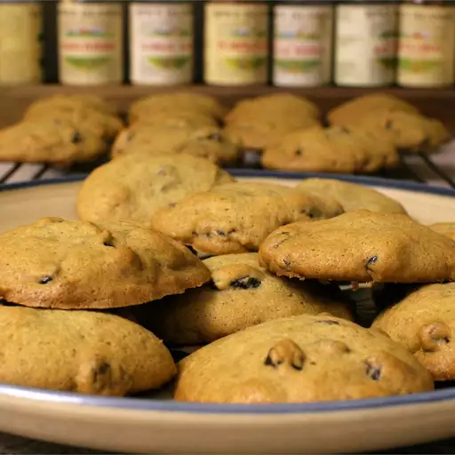

Persimmon Cookies

Ingredients
- Persimmon pulp
- Baking soda
- Flour
- Cinnamon
- Cloves
- Nutmeg
- Pinch of salt
- Cup of Sugar
- Stick of Butter
- An Egg
Directions
- Place persimmon pulp in a small bowl. Stir in baking soda.
- Sift flour, spices, and salt in a separate bowl.
- In yet another bowl, beat the sugar and butter. Beat the egg in the persimmon mix
- Stir flour until just-combined. Flod in the mix-ins.
- Drop spoonfuls f dough onto prepared baking sheet.
- Bake until edges are golden. Cool on wire rack.
Your mileage may vary, since the recipe gave little info on quantities.
Home
Source